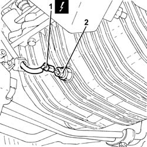

1084A42 engine oil temperature sender unit - r + r
- Path
- Procedures > 10 ENGINE > 1084 ENGINE LUBRICATION SYSTEM > 1084A indicators/check devices > 1084A42 engine oil temperature sender unit - r + r
- Kind
- repair procedure (removal / refitting; the operation number is the code)
- Applies to
- engines: 3.2 V6; all production periods
- Interactive page
- https://sloeber94.github.io/elrnDB-a156/en/#/3237611
Applies to: engines: 3.2 V6; all production periods
 Removing
Removing
 Refitting
RefittingPosition the vehicle on the ramp.
Ensure that the ignition key is in the OFF position, then disconnect the negative battery terminal.
 | Name | Connector |
|---|---|---|
- | Battery |
Proceed with removal 7055B54 under-engine guard - r r .
1. Disconnect the electrical connection from the engine oil temperature sender unit.
| Name | Connector |
|---|---|---|
1 | Engine oil temperature sensor |
2. Undo and remove the engine oil temperature sender unit.

Applies to: engines: 3.2 V6; all production periods
Refitting
RemovingPlace the engine oil temperature sender unit in its seating and tighten it to the recommended torque.
 | Fastening | Component | Ø | Value (daNm) |
|---|---|---|---|---|
- | - | - | - | - |
Connect the electrical connection to the engine oil temperature sender unit.
Proceed with refitting 7055B54 under-engine guard - r r .
Connect the negative (-) battery terminal.
Remove the car from the ramps.